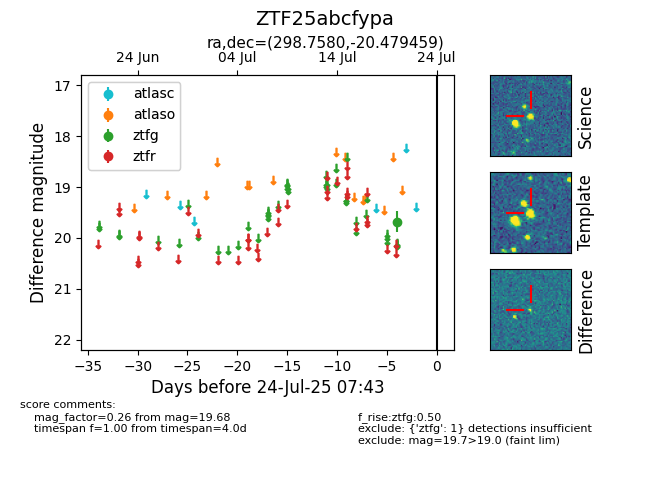

Target ZTF25abcfypa at 2025-07-23 11:52, see:
FINK: fink-portal.org/ZTF25abcfypa
Lasair: lasair-ztf.lsst.ac.uk/objects/ZTF25abcfypa
ALeRCE: alerce.online/object/ZTF25abcfypa
alt names
ZTF25abcfypa (ztf,fink)
coordinates:
equatorial (ra, dec) = (298.7580,-20.47946)
galactic (l, b) = (20.7580,-22.82550)
photometry
last ztfg=19.68
1 ztfg detections
